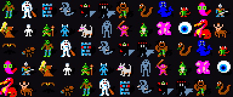
Rogue 3.6
Rogue as it first spread across the world's Unix machines in 1981, with its original monsters from the giant ant to the zombie: the version Advanced Rogue and Super-Rogue grew from.
> Enter the dungeonInfo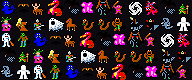
Rogue 5.4
The Berkeley Unix Rogue that named a genre: 26 levels, one monster for every letter, items you learn by using them, and the Amulet of Yendor at the bottom.
> Enter the dungeonInfo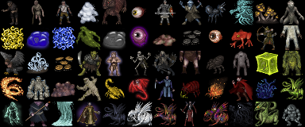
Umoria
The ancestor of Angband: one town, fifty levels of dungeon and the Balrog waiting at the bottom. Simple, harsh and still fair after forty years.
> Enter the dungeonInfo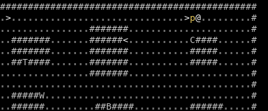
BOSS: Beyond Moria
Moria moved to a modern city: start in Seattle as a wrestler, ninja or scientist, carry baseballs, floppy disks and ray guns, and stay on the right side of the cops.
> Enter the dungeonInfoAlphaMan
After the bombs: a mutant with two random powers roams a valley in the ruins of Central New York, raids castles and lairs for old-world tech, and must stop the Grinch and his nerve toxin.
> Enter the valleyInfo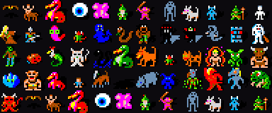
Super-Rogue
Robert Kindelberger's bigger Rogue 3.6: four stats, a weight limit, trading posts, maze levels and magic pools, with the Amulet of Yendor waiting at level 35 or deeper.
> Enter the dungeonInfo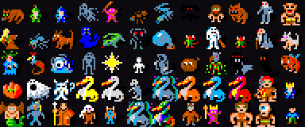
Advanced Rogue 5.8
The early Advanced Rogue: four classes with spells and prayers, around 120 monsters, trading posts, and a quest artifact to bring back up.
> Enter the dungeonInfo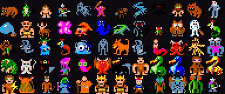
Advanced Rogue 7.7
Rogue grown into a full RPG: nine classes with spells, prayers and chants, over a hundred monsters, trading posts, and a quest artifact to carry back to the surface.
> Enter the dungeonInfo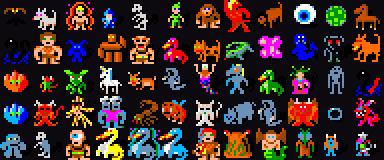
UltraRogue
The biggest game of the Rogue family: ten classes, about four hundred monsters from dinosaurs to the gods of Greyhawk, and an artifact you must bring up from the depths before the stairs will take you home.
> Enter the dungeonInfo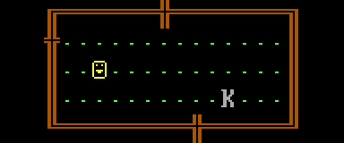
Rogue PC
The Epyx IBM PC edition of Rogue, in its original colours and CP437 symbols or with tiles: 26 levels down to the Amulet of Yendor, and back up again.
> Enter the dungeonInfo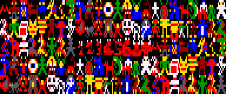
Larn
Your daughter is dying and the cure lies at the bottom of the caverns of Larn. A small, fixed dungeon, a town that turns gold into power, and a deadline that counts every step.
> Enter the dungeonInfo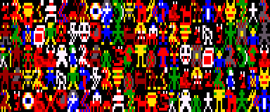
uLarn
Larn made harder: pick one of eight classes, from Ogre to Rambo, and fetch the cure for your daughter from the bottom of the volcano, past demon lords and the God of Hellfire, before time runs out.
> Enter the dungeonInfo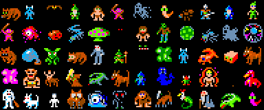
XRogue
The last of the Advanced Rogue line: nine classes with their own magic, trading posts and wilderness, and a quest relic deep in the dungeon that you must carry back to the surface.
> Enter the dungeonInfo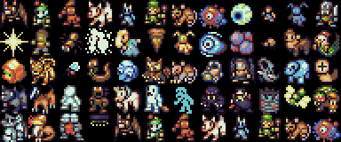
Hack
Andries Brouwer's Hack 1.0.3 (1985), the game NetHack grew from: pets, shops, a nymph that steals, a cockatrice that stones, and the Amulet of Yendor waiting at the bottom. Tiles: DawnLike, or NetHack's own, switchable.
> Enter the dungeonInfo
NetHack 1.3d
Mike Stephenson's early NetHack, a year after Hack: ninja, samurai, priests and valkyries join the classes, alongside shops and the Amulet deep below. Tiles: DawnLike, or NetHack's own, switchable.
> Enter the dungeonInfo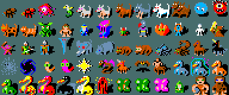
NetHack 5.0
The current NetHack from the DevTeam: forty years of monsters, gods, shops, quests and Sokoban, ending in the Astral Plane. Separate map, message and inventory windows. Tiles: NetHack's own.
> Enter the dungeonInfo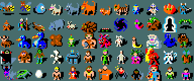
SLASH'EM
Super Lotsa Added Stuff Hack - Extended Magic: NetHack with more of everything. Extra roles and races, hundreds of new monsters and items, new spells and dungeon branches, all still on the way to the Amulet of Yendor.
> Enter the dungeonInfo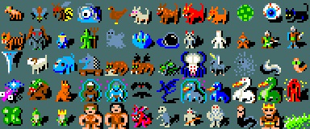
DynaHack
NetHack with randomized magical equipment, UnNetHack's new items, monsters and maps, magic chests and fewer instant deaths, played through the modern NetHack4-style interface. Tiles: NetHack 3.4.3's.
> Enter the dungeonInfo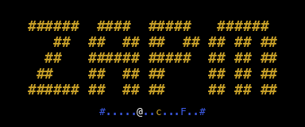
ZAPM
A janitor, a space marine or a psion on a space base full of aliens, droids, klingons and bad jokes. Canisters for potions, floppy disks for scrolls, ray guns for wands. Text only.
> Enter the dungeonInfo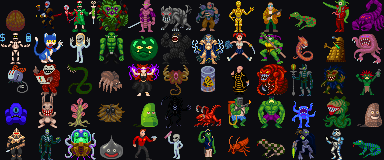
PRIME
ZAPM grown up: new professions, mutant powers and implants, and the space base with its Sewer Plant, Gamma Caves, Robot Town and Mainframe. Shown with its NotEye tileset.
> Enter the dungeonInfo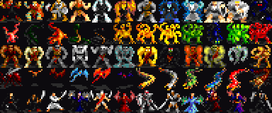
ToME 2
The Tales of Middle-earth: a whole map of Middle-earth to roam, dozens of themed dungeons, gods to follow and a skill system that lets any class grow its own way. Also includes the Theme module.
> Enter the dungeonInfo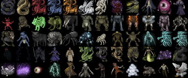
Zangband
Angband in the shadow of Zelazny's Amber: a huge wilderness with many towns and dungeons, Amberite princes among the monsters, chaos patrons, pets and Lua-scripted magic realms.
> Enter the dungeonInfo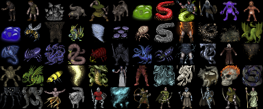
FrogComposband
The biggest of the Hengband/PosChengband line: dozens of races and classes, monster races that grow up or possess what they kill, a wilderness full of towns and quests, and a fast coffee-break mode.
> Enter the dungeon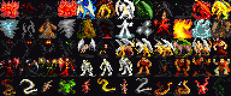
TinyAngband
Made by the XAngband team as a compact alternative to the sprawling Zangband family: a world map with several towns and dungeons, and a quest count you choose at birth.
> Enter the dungeonInfo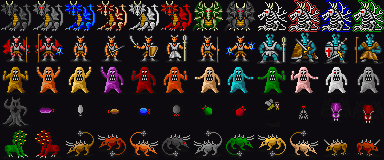
Quickband
Angband cut down to a quick game: fewer, denser levels, better loot and faster levelling. Built so a full run from town to the final boss fits into days instead of months.
> Enter the dungeonInfo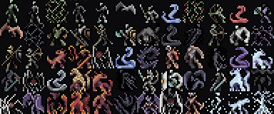
Sil-Q
Steal a Silmaril from Morgoth's crown and escape Angband alive. No classes, no levels and almost no magic: stealth, careful positioning and a few hard-won skills keep you going.
> Enter the dungeonInfo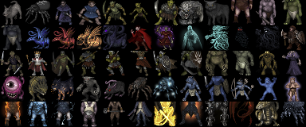
Tactical Angband
Angband without the grind: 50 small levels, short sight lines, one mighty blow instead of many small ones, and almost no long-range teleporting, so every fight is decided by positioning.
> Enter the dungeonInfo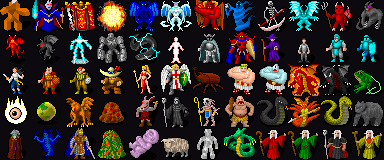
Linley's Dungeon Crawl
The game Stone Soup grew from: twenty-six species, gods with their own rules, a dungeon of branches from the Orc Mines to Hell and Pandemonium, and the Orb of Zot at the bottom. Shown with its 2005 tile version.
> Enter the dungeonInfo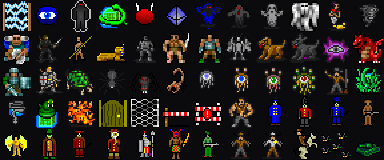
Decker
A hacker's career in the spirit of Shadowrun: take contracts, upgrade your cyberdeck and write your own programs, then crawl turn by turn through generated corporate systems where ICE programs are the monsters.
> Jack inInfo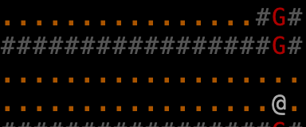
Omega
Laurence Brothers' sprawling world: the city of Rampart, a wilderness map, guilds, priesthoods, a moon that changes your luck, and many dungeons. Text only, 16 colours.
> Enter the dungeonInfo